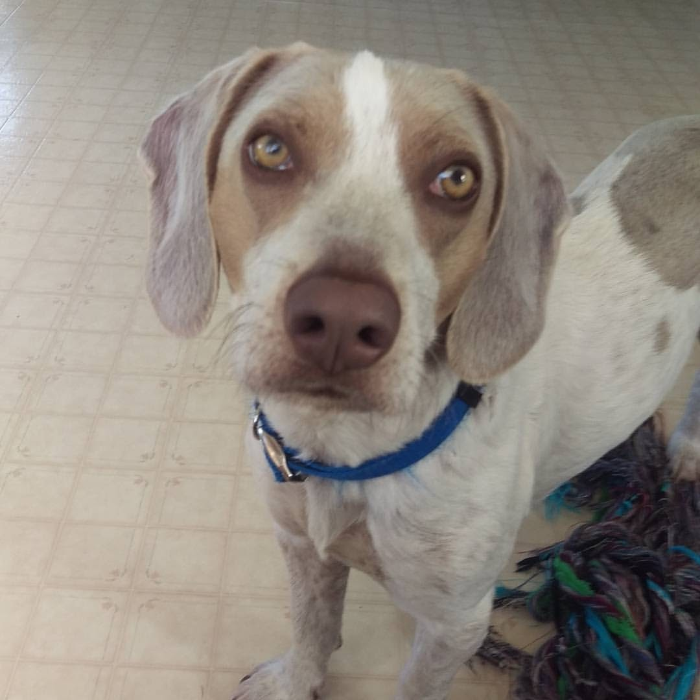

POPULARITY

On its formation, the Association of Masters of Harriers and Beagles took over the running of a regular show at Peterborough that had started in 1889, and the Beagle Club in the UK held its first show in 1896. The regular showing of the breed led to the development of a uniform type, and the Beagle continued to prove a success up until the outbreak of World War I when all shows were suspended. After the war, the breed was again struggling for survival in the UK: the last of the Pocket Beagles was probably lost during this time, and registrations fell to an all-time low. A few breeders (notably Reynalton Kennels) managed to revive interest in the dog and by World War II, the breed was once again doing well. Registrations dropped again after the end of the war but almost immediately recovered.
As purebred dogs, Beagles have always been more popular in the United States and Canada than in their native country England. The National Beagle Club of America was formed in 1888 and by 1901 a Beagle had won a Best in Show title. As in the UK, activity during World War I was minimal, but the breed showed a much stronger revival in the U.S. when hostilities ceased. In 1928 it won a number of prizes at the Westminster Kennel Club's show and by 1939 a Beagle – Champion Meadowlark Draughtsman – had captured the title of top-winning American-bred dog for the year. On 12 February 2008, a Beagle, K-Run's Park Me In First (Uno), won the Best In Show category at the Westminster Kennel Club show for the first time in the competition's history. In North America they have been consistently in the top-ten most-popular breeds for over 30 years. From 1953 to 1959 the Beagle was ranked No. 1 on the list of the American Kennel Club's registered breeds; in 2005 and 2006 it ranked 5th out of the 155 breeds registered. In the UK they are not quite so popular, placing 28th and 30th in the rankings of registrations with the Kennel Club in 2005 and 2006 respectively. In the United States the Beagle ranked 4th most popular breed in 2012 and 2013, behind the Labrador Retriever (